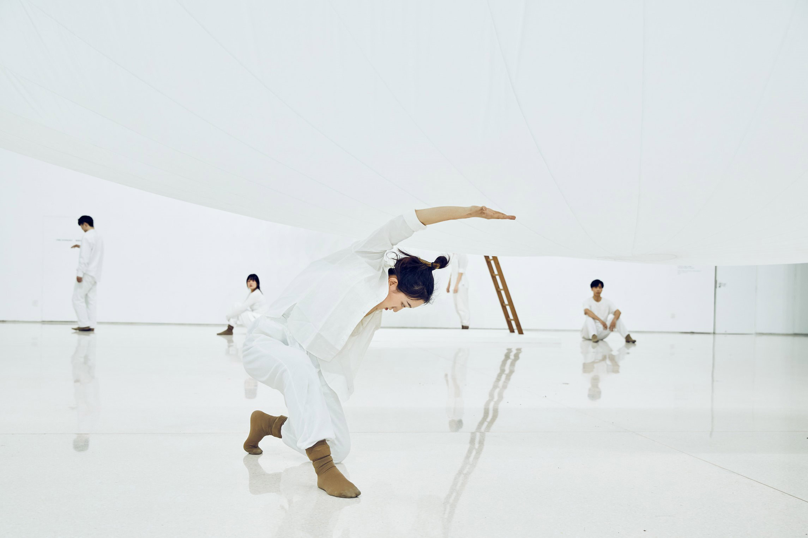
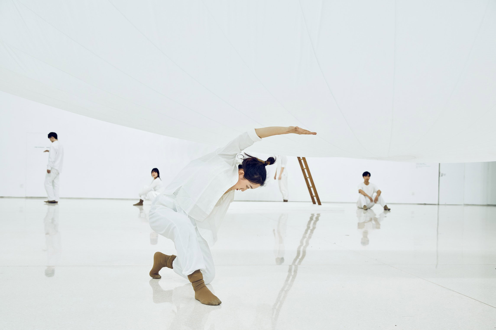
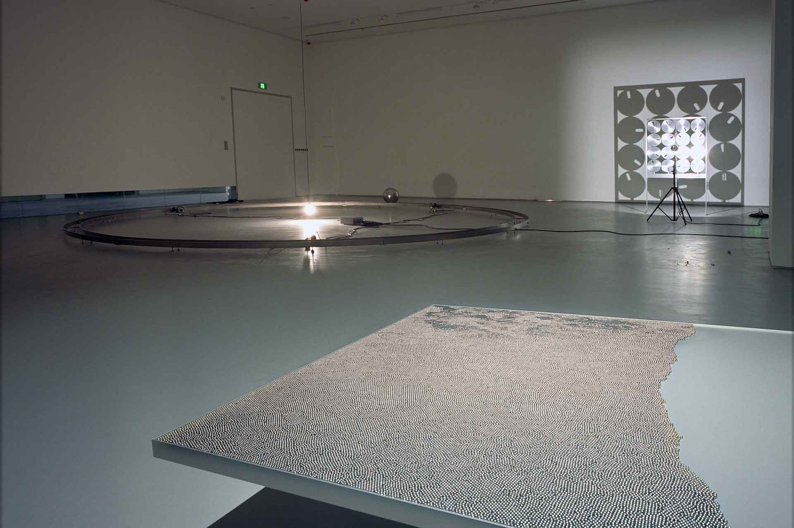
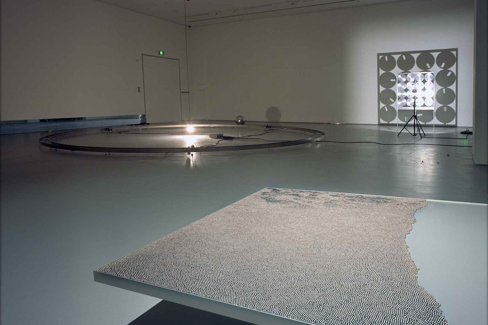
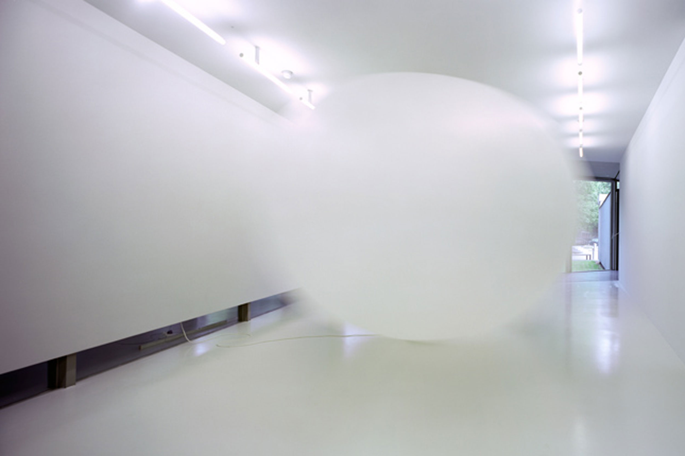
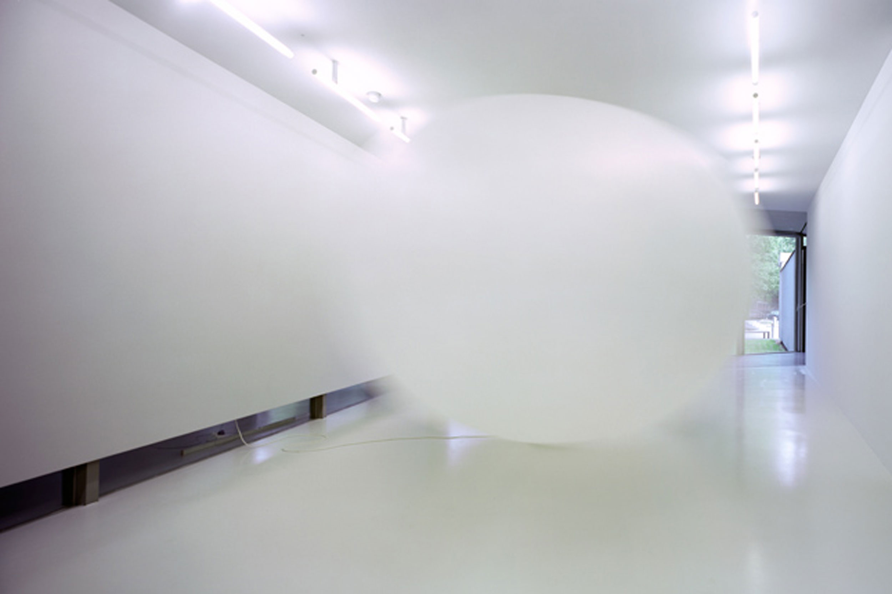

2024
 Puolenvaihto, Tammela Football Stadium, Tampere
Puolenvaihto, Tammela Football Stadium, Tampere
 Yhteispeli,
Valkeala
multipurpose building, Kouvola
Yhteispeli,
Valkeala
multipurpose building, Kouvola2023
 Latent Spaces, LA BIBI Gallery, Palma
Latent Spaces, LA BIBI Gallery, PalmaGroup Exhibitions
Public Commissions
As Oy Jyväskylän Hjalmar, Jyväskylä
Mutkalampi Wind Farm, Kannus/Kalajoki, under construction
2022
Group Exhibitions
Wavelength: At the Moment, Times Art Museum, Chongqing
Hidden, Onoma, Art & Design Biennale, Fiskars
 Split Views, Hotel AX, Helsinki
Split Views, Hotel AX, Helsinki
2021
Group Exhibitions
Wavelength: At the Moment, Times Art Museum, Chengdu
 Wavelength: At the Moment, Times Art Museum, Beijing
 Wavelength: At the Moment, Times Art Museum, Beijing
2020
Solo Exhibitions
 Imminence, Galerie Anhava, Helsinki
Imminence, Galerie Anhava, Helsinki
Group Exhibitions
freq_wave: 7 seas, TBA21-Academy's Ocean Archive Máquina del Tiempo/Time Machine, Museo de la Ciudad de Querétaro, Ouerétaro
2019
 Imminence / Time Slip, MMSU, Museum of Modern and Contemporary Art, Rijeka
Imminence / Time Slip, MMSU, Museum of Modern and Contemporary Art, Rijeka
Group Exhibitions
Linha Atemporal/Timeless Line, Dan Galeria, Sao Paulo
Mielen silmin/With the Eyes of My Mind, Pori Art Museum, Pori
Kosketus, new set up, EMMA Espoo Museum of Modern Art, Espoo
2018
Group Exhibitions
Toisto – group exhibition, Purnu Art Center, Orivesi
Kosketus, new set up, EMMA Espoo Museum of Modern Art, Espoo
Squares in Motion – group exhibition, Museum Ritter, Waldenbuch
 Nine Tomorrows: The Future is Here, PowerLong Gallery Center, Hangzhou
Kosketus, new set up, EMMA Espoo Museum of Modern Art, Espoo
Squares in Motion – group exhibition, Museum Ritter, Waldenbuch
 Nine Tomorrows: The Future is Here, PowerLong Gallery Center, Hangzhou
 Insight, Aalto University, School of Art, Design and Architecture, Väre, Espoo
Insight, Aalto University, School of Art, Design and Architecture, Väre, Espoo
2017
Solo Exhibitions
 Grey Area, Museum of Contemporary Art, MSU, Zagreb
Grey Area, Museum of Contemporary Art, MSU, Zagreb
 Grey Area, Helsingin Taidehalli, Helsinki
Grey Area, Helsingin Taidehalli, Helsinki
Group Exhibitions
Totuus Suomesta / The Truth About Finland, Porin kulttuurisäätö, Pori
Galerie Samuelis Baumgarte, Bielefeld Collection
Helsinki Art Museum, HAM, Helsinki
Ghost in the Machine, FEDERKIEL Raum für Kunst | Bildung | Ökologie | Genuss, Munich
Freq_out 11 Radio, The Lake Radio, Copenhagen
2016
 Galerie Anhava,
Helsinki
Galerie Anhava,
HelsinkiGroup Exhibitions
Freq_Out 12, Thyssen-Bornemisza Art Contemporary (TBA21), Vienna
Taiteen tähtitaivaat, Taidemuseo Gösta, Mänttä
Ghost in the Machine, EIGEN + ART Lab, Berlin
2015
Group Exhibitions
Myth/History II, Shanghai Galaxy, Yuz Museum, Shanghai
TAJU, Hyvinkään taidemuseo, Hyvinkää
Eppur Si Muove, And Yet it Moves, MUDAM Luxembourg
Esther Schipper & Johnen Galerie, 11 Colombia, Monaco
Sound Art Exhibition, Nordic Music Days, King Christian Brewery, Copenhagen
2014
Group Exhibitions
Freq_Out 10, 5th Marrakech Biennale, Marrakech
Structures of the Invisible, Galerija Klovicevi dvori, Zagreb
Matters of Time – Artists from Finland, Frankfurter Kunstverein, Frankfurt
Structures of the Invisible, Fondation Vasarely, Aix-en-Provence
Freq_Out 1.2, permanent sound installation, Skandion, Uppsala
Public Commissions
 Pairs, Kastelli Community Centre, Oulu
Pairs, Kastelli Community Centre, Oulu2013
Solo Exhibitions
Esther Schipper, Berlin
Group Exhibitions
Kiasma Hits, Nykytaiteen museo Kiasma, Helsinki
Events in Nature, EMMA – Espoon modernin taiteen museo, Espoo
7. aalto – The 7th Wave, Lönnströmin taidemuseo, Rauma; Etelä-Karjalan taidemuseo, Lappeenranta
Freq_Out 9, Sonic Acts Festival, Stedelijk Museum, Amsterdam
2012
Solo Exhibitions
Gallery Niklas Belenius, Stockholm
Galerie Anhava, Helsinki
Group Exhibitions
7. aalto – The 7th Wave, Helsingin
Taidehalli,Helsinki
Camouflage, Nykytaiteen museo Kiasma, Helsinki
Cave Allegories, Taidekeskus Retretti, Punkaharju
Freq_Out 8, Moderna Museet, Stockholm
 Cage 100 – Opening Spaces for Action, Galerie für zeitgenössische Kunst Leipzig
Camouflage, Nykytaiteen museo Kiasma, Helsinki
Cave Allegories, Taidekeskus Retretti, Punkaharju
Freq_Out 8, Moderna Museet, Stockholm
 Cage 100 – Opening Spaces for Action, Galerie für zeitgenössische Kunst Leipzig
Public Commissions
Helsingin Isolokki -asunto Oy / Bostads Ab Helsingin Isolokki / Helsingin Isolokki housing co-operative, Arabianranta, Helsinki
Emporia ostoskeskus / Emporia köpcentrum / Emporia shopping centre, Malmö
2011
Group Exhibitions
2010
Group Exhibitions
01-10, Esther Schipper, Berlin
Mänttä Art Festival, Pekilo, Mänttä
Umedalen Skulptur, Galleri Andersson/Sandström, Umeå
2009
2008
Group Exhibitions
2007
 SKAN Sound Art Project, Riga
SKAN Sound Art Project, RigaPublic Commissions
Bergen University Student Center
 Sonambiente Festival,
Berlin
Sonambiente Festival,
Berlin Pori Art Museum
Pori Art Museum Kunstmuseum, Bonn
Kunstmuseum, Bonn2005
2004
 Centre d'Art Contemporain la Synagogue de Delme, Delme
Centre d'Art Contemporain la Synagogue de Delme, DelmeGroup Exhibitions
2003
 Gallerie Andréhn-Schiptjenko, Stockholm
Gallerie Andréhn-Schiptjenko, StockholmGroup Exhibitions
Freq_out, Disturbances, Charlottenborg
Exhibition Hall, Copenhagen
Snow Show – Preview, Palazzo Zorzi, Venice
Snow Show – Preview, Palazzo Zorzi, Venice
2002
GroupExhibitions
Sonarmatica, Centre
de Cultura
Contemporain de
Barcelona, Barcelona
2001
GroupExhibitions
Ambient City 01 -radio project, Kiasma-Museum of Contemporary Art, Helsinki (in collaboration with Iiro Auterinen and Matti Knaapi)
Entrophy in the Living Room, Stats Gallerie, Kiel
Surfaces and Whrilpools, Borås Konst Museum, Borås
2000
GroupExhibitions
Audible
Light,
Museum of
Modern Art
Oxford
1999
GroupExhibitions
 Finnish Line-Starting Point, Musée d'Art Moderne et Contemporain de Strasbourg
Finnish Line-Starting Point, Musée d'Art Moderne et Contemporain de StrasbourgPublicCommissions
Kiasma Museum of Contemporary Art, Helsinki
1998
SoloExhibitions
1997
1996
1995
 Electronic Art, Rauma, Turku,
Jyväskylä
Electronic Art, Rauma, Turku,
Jyväskylä
1993